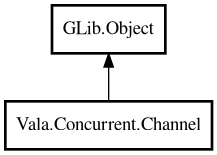

Channel
Object Hierarchy:

Description:
public class Channel<T> : Object
Generic typed message-passing channel inspired by Go channels.
Channel supports both unbuffered (synchronous) and buffered modes. In unbuffered mode, send blocks until a receiver consumes the value.
In buffered mode, send blocks only when the internal buffer is full.
Content:
Static methods:
- public static Result<Channel<T>,Error> buffered<T> (int capacity)
Creates a buffered channel.
- public static Channel<T> fanIn<T> (ArrayList<Channel<T>> sources)
Merges multiple source channels into one output channel.
- public static Result<ArrayList<Channel<T>>,Error> fanOut<T> (Channel<T> src, int n)
Distributes values from source channel to n output channels.
- public static Channel<U> pipeline<T,U> (Channel<T> input, owned MapFunc<T,U> fn)
Builds a transform pipeline channel.
- public static Pair<int,T>? select<T> (ArrayList<Channel<T>> channels)
Waits until one channel becomes receivable.
Creation methods:
Methods:
- public int capacity ()
Returns buffer capacity (0 for unbuffered).
- public void close ()
Closes channel for further sends.
- public bool isClosed ()
Returns whether channel is closed.
- public T receive ()
Receives a value, blocking until one is available.
- public T receiveTimeout (Duration timeout)
Receives with timeout.
- public void send (T value)
Sends a value to the channel.
- public int size ()
Returns current buffered size.
- public T tryReceive ()
Tries to receive a value without blocking.
- public bool trySend (T value)
Tries to send a value without blocking.
Inherited Members:
All known members inherited from class GLib.Object
- @get
- @new
- @ref
- @set
- add_toggle_ref
- add_weak_pointer
- bind_property
- connect
- constructed
- disconnect
- dispose
- dup_data
- dup_qdata
- force_floating
- freeze_notify
- get_class
- get_data
- get_property
- get_qdata
- get_type
- getv
- interface_find_property
- interface_install_property
- interface_list_properties
- is_floating
- new_valist
- new_with_properties
- newv
- notify
- notify_property
- ref_count
- ref_sink
- remove_toggle_ref
- remove_weak_pointer
- replace_data
- replace_qdata
- set_data
- set_data_full
- set_property
- set_qdata
- set_qdata_full
- set_valist
- setv
- steal_data
- steal_qdata
- thaw_notify
- unref
- watch_closure
- weak_ref
- weak_unref